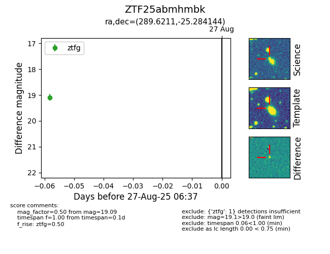

Target ZTF25abmhmbk at 2025-08-27 06:47, see:
FINK: fink-portal.org/ZTF25abmhmbk
Lasair: lasair-ztf.lsst.ac.uk/objects/ZTF25abmhmbk
ALeRCE: alerce.online/object/ZTF25abmhmbk
alt names
ZTF25abmhmbk (ztf,fink)
coordinates:
equatorial (ra, dec) = (289.6211,-25.28414)
galactic (l, b) = (12.6640,-16.82816)
photometry
last ztfg=19.09
1 ztfg detections
